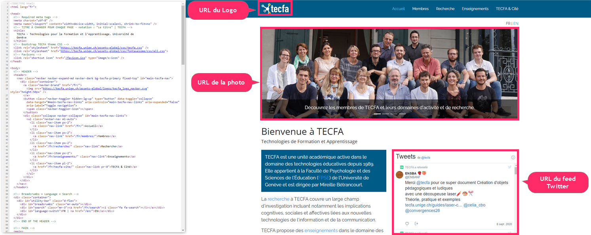
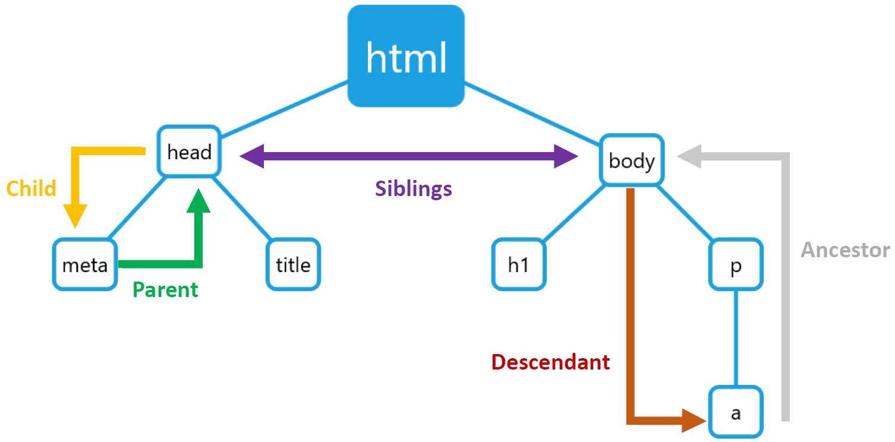

Introduction à CSS
Mattia A. Fritz
TECFA, Université de Genève
Comment s'affiche une page ?
Le navigateur télécharge le code source de la page et tous les éléments externes.
Deux fonctions du browser
Le navigateur web effectue deux opérations avec le code source HTML5 :
- Parsing : création du DOM à travers la hiérarchie des balises.
- Rendering : application des propriétés graphiques aux éléments du DOM.
Parsing : relation entre éléments
La relation entre noeuds influence l'affichage d'un élément par rapport à un autre (e.g. embôitement).
Rendering : tout est une boîte

Tout élément HTML5 est une sorte de boîte rectangulaire. À l'image, une bordure rouge est appliquée à tout élément.
Types de boîtes différents
Il existe ~3 types de boîtes :
- Block : l'élément occupe la largeur disponible.
- Inline : l'élément occupe seulement la place nécessaire à son contenu.
- None : l'élément n'occupe pas de place physique.

<h1> et <p> sont des
éléments block qui occupent toute la largeur
disponible indépendamment du contenu.
<a> est un élément inline qui
occupe seulement la place nécessaire et peut même aller à la
ligne avec du contenu sur les deux côtés.
<head> est un élément none, on ne
le voit pas.
CSS = propriétés des boîtes
CSS est un langage qui permet de déterminer les propriétés graphiques des éléments HTML5. Il s'occupe de :
- Identifier les éléments à styliser avec un sélecteur
- Déclarer une ou plusieurs propriétés à modifier
- Spécifier les valeurs à appliquer parmi les choix possibles

Exemple d'un sélecteur avec trois propriétés. Les {} délimitent un bloc de code.
Trois niveaux de CSS
On retrouve du CSS à trois niveaux hiérarchiques différents :
- Agent-defined : chaque navigateur possède un fichier CSS qui applique des propriétés par default. Indispensable pour retro-compatibilité avec anciennes pages sans CSS.
- User-defined : certains navigateurs laissent les utilisateurs choisir quelques paramètres, comme la taille de la police.
- Code-defined : le code CSS est téléchargé avec la page. Ce le niveau qu'on peut définir en tant que créateurs de pages.
Ajouter du CSS à une page
On peut ajouter du CSS de différentes manières :
-
À l'intérieur de l'attribut
style=""des balises HTML5 -
À l'intérieur d'une balise
<style>...</style>dans leheaddu document -
En utilisant un
fichier .css externe, qu'on
incorpore par référence dans le
headdu document
Les trois manières peuvent se combiner dans la même page.
Attribut style=""
Toute balise dans le body d'un document HTML5 peut
avoir l'attribut style.
Paragraphe avec police orange et en gras.
Propriétés et valeurs sont séparées par un :, et pour
séparer plusieurs définitions on utilise ;